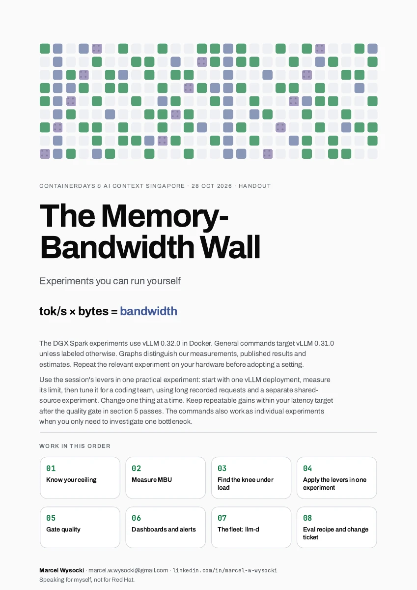

Model bandwidth utilization (MBU), Databricks 2023. Short-context, one-user estimate; not a hardware-counter reading. No universal stop-tuning percentage.
Movement 2 · field kit: measure MBU
Measure your MBU in five minutes.
# 1 · Fetch the index, not the weights
MODEL=Qwen/Qwen3.8-27B
REV=1d4bf0f2ff6012fd82039f2fa52739d0dd7c60c0
curl -fsSL "https://huggingface.co/$MODEL/resolve/"\
"$REV/model.safetensors.index.json" |
jq '.metadata.total_size / 1e9'
# 55.56 GB: the whole checkpoint
# Text decode reads about 51.25 GB.
# Vision, MTP and most input embeddings
# aren't read at each text-decode step.
# Text-decode byte estimate: handout §1
Turns schematic. Price: DeepSeek V4-Pro, off-peak, checked 25 Oct 2026. Share prefixes within an approved group; use different secret "cache_salt" values across required isolation boundaries (vLLM 0.31.0).
Movement 4 · lever 1 · keep the prefix
KV offload adds capacity and transfer latency.
HBM≈ 3–8 TB/s · tens to hundreds of GB
CPU memoryover PCIe 5 x16, the CPU-to-GPU link ≈ 64 GB/s each way
Discrete-GPU tiers, schematic; the Spark shares CPU/GPU memory, so its experiment uses disk without CPU retention. vLLM 0.31.0: CPU offload size is GiB summed across GPUs. Router-visible native offload needs "self_describing_kv_events" and KV event publishing, both off by default. Bandwidths: vendor specs, PCIe 5 x16, Gen4–Gen5 NVMe.
Movement 4 · lever 2 · fewer weight bytes
Weight quantization shrinks the weight read. The ceiling rises in proportion.
Qwen3.8-27B checkpoint · same weights, fewer bytes each · thickness to scale
55.6 GBbf16 · 16 bits
one-user ceiling · B200, 8 TB/s · one box = one token's weights
GPU
144 tok/s
NVFP4 runs W4A4 (4-bit weights, 4-bit activations: the values passed between layers) only on Blackwell (B200, GB10). On Hopper, vLLM falls back to W4A16: 4-bit weights, 16-bit activations.
log "Model loading took X GiB"; a Marlin warning means no 4-bit math
Belt schematic. Sizes: Qwen/Qwen3.8-27B, -FP8, nvidia/Qwen3.8-27B-NVFP4 (NVFP4 feed-forward blocks and lm_head; FP8 attention and DeltaNet). NVFP4: 4-bit values, an 8-bit scale per 16 weights, an FP32 scale per tensor. B200 8 TB/s: NVIDIA spec. vLLM 0.31.0: plain --quantization fp8 no longer quantizes a bf16 checkpoint at load.
Movement 4 · lever 2 · how NVFP4 works
NVFP4 stores 4-bit values with two levels of scale.
÷ 0.81254.70 ÷ 6 = 0.78, rounded to the nearest 8-bit float: 0.8125. One scale per 16 weights puts the largest near 6.
Including scales, each weight uses under a third of bf16 storage.
4-bit values plus an 8-bit scale per 16 weights: 4.5 bits per weight.
NVIDIA, "Introducing NVFP4" (Jun 2025) · Four Over Six, arXiv:2512.02010. Example block computed by hand, round to nearest; block scale rounded to FP8 (E4M3).
Movement 4 · lever 2 · the quality checks
NVFP4 vs bf16: published score changes.
Example budget: at most 1.5 points loss. Within budget / over budget. Dots are published means; paired uncertainty intervals are unavailable.
startup log "GPU KV cache size: N tokens", before and after
DGX Spark, Qwen3.8-27B at 128k; ≈ 29.4 GiB payload budget (slide 11): 8.1 GiB per bf16 conversation, 4.1 GiB in FP8, including unchanged 147 MiB state. Estimates, not measured admissions; startup allocation also includes state copies and padding.
Movement 4 · lever 3 · when it pays
FP8 KV halves the bytes. It only shows when those bytes were the bottleneck.
vLLM's published burst test · Llama-3.3-70B · 4× H100 · P99 (99th percentile) TTFT
17 sbf16 KV1.3 sFP8 KV
Qwen3-30B-A3B-Instruct-2507 · MoE · 2× H100 · memory to spare
samethroughput, FP8 KV vs bf16 KV
No calibrated KV scales in the checkpoint: vLLM uses a default scale and logs a warning.
vLLM blog, 22 Apr 2026 (crossover, gpt-oss-20b, v0.19.1, concurrency 1; full FP8 crosses at 22,109 on H100, ≈ 13k on B200) and 11 May 2026 (Llama burst TTFT, 300 prompts, 1,024 in / 512 out; Qwen throughput across request rates; v0.20.2). Curve shape schematic. Default scale: vLLM 0.31.0 kv_cache.py.
Movement 4 · lever 3 · asymmetric quantization
Cached values can cluster away from zero. Put the quantization levels where the values are.
codes that land in range9 / 16
At 2 bits there are only 4 codes. Wasting half leaves 2 usable codes. vLLM's FP8 KV stays symmetric: 8 bits have codes to spare.
Worked example, one channel in [−0.4, 2.0]. Symmetric: scale = 2.0 ÷ 7, codes −8…7. Asymmetric: scale = 2.4 ÷ 15, zero-point shifts the grid. KIVI, arXiv:2402.02750. vLLM 0.31.0 FP8 KV is symmetric only (compressed_tensors.py:1095).
Movement 4 · lever 3 · K costs more than V
A key error changes who gets attention. A value error changes the mix.
error in K → changes attention shares
t1
0.50
t2
0.23
t3
0.10
t4
0.17
t2's score 1.2 → 2.4: the winner flips
same error in V → averaged by the attention shares
attention shares, unchanged
t1t2t3t4
output
shifts by 0.23 × the error: a change in the mix, not always harmless
4-bit keys + 2-bit values10.1
2-bit keys + 4-bit values31.5
KVTuner · Table 2 Both average 3 bits per number. Reference (8-bit keys, 8-bit values): 9.95. Perplexity: lower is better. Give more bits to K here.
KVTuner: Sensitivity-Aware Layer-wise Mixed Precision KV Cache Quantization for Efficient and Nearly Lossless LLM Inference. arXiv:2502.04420, Table 2: Llama3-8B-Instruct, Wikitext, Transformers KIVI-HQQ. Attention shares are illustrative: softmax over [2.0, 1.2, 0.4, 0.9]. Mechanism: QAQ, arXiv:2403.04643, §3.1.
Movement 4 · lever 3 · unequal K and V bits in vLLM
TurboQuant k8v4 uses 8-bit keys and 4-bit values.
KV capacity vs bf16 · dashed line: bf16 = 1×
FP8
2.0×
turboquant_k8v4
2.4×
throughput vs bf16
turboquant_k8v4
75–80%
Start with FP8. Reach for k8v4 only when FP8's room isn't enough, and time it on your GPU first.
startup log "GPU KV cache size: N tokens", Mean TPOT and P95 TTFT, all vs fp8
vLLM blog, 11 May 2026, v0.20.2, offline, 200 prompts: k8v4 throughput 80% of bf16 (Qwen3-30B-A3B, 2×H100) and 75% (Llama-3.3-70B, 4×H100); 2.4× measured capacity; "no significant advantage over FP8". FP8 2.0×: 16 ÷ 8 bits per KV value.
Movement 4 · lever 4 · speculative decode
Draft cheap. Verify once. Keep what matches.
contextdefparse(
draftself,path=Nonefirst miss: it and everything after it are dropped
target model checks all five in one pass
keptself,path)4 tokens · 1 weight read
Greedy illustration; sampled decoding preserves the target distribution in theory; finite-precision numerics can differ (vLLM 0.31.0 lossless guarantees). Leviathan et al., arXiv:2211.17192: 2×–3× on T5-XXL, batch 1.
Movement 4 · lever 4 · the math, without the math
Tokens per pass depend on acceptance.
Draft 5 tokens. Each is right with some chance. Keep them until the first miss, then the target adds one of its own.
50% right
+1
…
avg–
70% right
+1
…
avg–
90% right
+1
…
avg–
About 2, 3, 4.7 tokens per pass. vLLM logs this number as Mean acceptance length. Read it on your own traffic.
More accepted tokens can still be slower. Compare Mean TPOT with speculation off and on; repeat both.
Leviathan et al., arXiv:2211.17192, eq. 1: tokens per pass = (1 − αγ+1) ÷ (1 − α), α = chance a guess is kept, γ = guesses drafted. Here γ = 5, so 1.97, 2.94, 4.69, if each guess is independent and equally likely to be kept.
Movement 4 · lever 4 · where it wins
Match the drafter to your traffic.
Trained draft headsEAGLE-3, DSpark or the model's own draft layers (MTP, multi-token prediction). A published Qwen3.8-27B DSpark speculator:3.76 output tokens per pass, including the target token, on tool calls. Acceptance only; speedup not measured.
N-gram lookupMatch the latest tokens to an earlier prompt sequence; propose what followed. No training.
A prefix-aware router knows which prefix each pod has cached.
client
Envoy gatewayGateway API
Endpoint Pickerfilter → score → pick
InferencePool
vLLMvLLMvLLMvLLM
reads each pod's queue and KV usage every 50 milliseconds
Precise routing: KV block events → index of block locations; match the request's prefix.
Schematic; example pinned to llm-d v0.10 (29 Sep 2026), CNCF Sandbox; Gateway API Inference Extension v1. Poll: --refresh-metrics-interval, default 50 ms; queue and KV usage are load, not prefix identity. Same pattern: NVIDIA Dynamo (--router-mode kv), vLLM Production Stack.
Movement 5 · llm-d · route to the cache
Random routing repeats each shared prefix's prefill across pods.
random routing
next request
Ashared prefix A + new question
One color = one tenant's 6,000-token shared prefix. Each pod has room for two prefixes.
pod 1
pod 2
pod 3
pod 4
–request cache hit rate
0prefills recomputed
simulated
llm-d benchmark · TTFT P90 (90th percentile)92.6 s → 0.54 s
llm-d's default router vs Kubernetes round-robin, same replica count per test. Dashed line: round-robin, 1×.
Code generation · input tok/s
2.9×
Business software · input tok/s
2.0×
Reasoning · output tok/s
?
Reasoning averages about 8,000 output tokens per request. No router shrinks that read.
llm-d blog, 17 Aug 2026. Throughput at the knee. Qwen3-32B, TP=2 (tensor parallel: each layer split across two H100s). Matched pods within each comparison: ten for code and reasoning, eight for business software. Code-gen: about 70,000-token prompts, 46k vs 16k input tok/s; business software 90k vs 45k. Reasoning 7.0k vs 6.8k output tok/s, about 8,000 output tokens on average.
Movement 5 · llm-d · GPU-to-GPU KV transfer
Move cached KV directly between GPUs.
The KV payload does not stage in system RAM.
Schematic GPUDirect RDMA path: compatible registered GPU buffers and connector coordination required. llm-d P/D uses NIXL; UCX is the default backend for on-prem RoCE/InfiniBand. This transfer mechanism does not provide automatic prefix discovery.
Movement 5 · llm-d · split prefill and decode
Disaggregated P/D: prefill pods, decode pods.
added: prompt mostly uncachedprefill pod
compute-bound first token only
KVKV copied over RDMA, by NIXL
picked first · cached prefix stays heredecode pod
cached prefixmemory-bound streams tokens
The picker chooses the decode pod first, and adds a prefill pod only when much of the prompt is uncached.
Schematic. llm-d prefill/decode (P/D) docs: suited to about 10k in / 1k out, not 200 in / 200 out. Standard-network fallback is for testing only. Splitwise arXiv:2311.18677 · DistServe arXiv:2401.09670.
Movement 5 · operations
Alert on latency, cache pressure and queues.
< 500 msexample · time to first token (TTFT) P95, interactive; set it and per-request TPOT P95 from your SLO (service-level objective)
Cache hitslive · prefix token hit rate, by pod and workload
MBUbefore and after a change one-user MBU per model and GPU
$ / 1Mbefore and after a change GPU $/hour ÷ output tokens/hour × 1M
busyGPU 100%queue: 2 waiting
overloadedGPU 100%queue keeps growing
Scale on active requests and queues, not GPU utilization. Alert on KV usage, queue depth, P95 TTFT and per-request TPOT.
500 ms is an illustrative latency target. Set targets from your SLO. Hit rate counts tokens; there is no universal target. Scrape /metrics: vllm:kv_cache_usage_perc and vllm:num_requests_waiting. Busy vs overloaded schematic; llm-d router queues need flow control.
Close · governance: the eval recipe
The eval recipe: change one thing, repeat both setups.
1FreezeSave prompts, checks and setup. Set the quality-loss budget. Change one thing.
2Repeat bothRepeat baseline and candidate. Match traffic, warm-up and cache state, including persistent tiers.
3Compare paired casesPair the same cases and seeds. Score the exam and your task separately, with uncertainty intervals.
4Verdictkeeprepeatable gain and quality within budget e.g. −0.6 to +0.2 against −1revertno repeatable gainrevertquality loss clearly exceeds budgetholduncertain: keep baseline, gather evidence
Close · the order
Measure first. Then pull the levers your traffic needs.
For decode. Estimate the ceiling, then one-user MBU.Short context, speculation off. Low MBU: profile overhead. Batch within the latency target. GuideLLM, a vLLM subproject, runs load sweeps and reports latency and throughput.
Repeated prefixesPrefix cache (on by default). Then route to it.
Weights dominateFP8 where the GPU has FP8 math (an FP8 checkpoint, or --quantization fp8_per_tensor); NVFP4 where it has FP4 math (Blackwell).
Context dominates--kv-cache-dtype fp8. Then fewer bits, carefully.
Predictable outputSpeculative decode: mtp, eagle3, dspark or ngram.
Long prompts, strict TTFT--max-num-batched-tokens first. A prefill/decode split needs RDMA.
Keep only repeatable gains after the quality gate passes.High MBU, batching plateaued, nothing above applies: stop. No sampler, CUDA graph or sequence-limit tweak shrinks the read.
vLLM 0.31.0 commands and pinned tool versions: field guide. GuideLLM: github.com/vllm-project/guidellm.

HandoutRun the field experiment yourselfDownload PDF
Session feedbackFor this session and the organizerssfeedback.com/Wj5q8l
Your GPU isn't slow. It's starving.
Skip repeated work. Min the bytes. Max the tokens per read.
bandwidth ÷ bytes per token = tok/s
Marcel Wysocki · marcel.w.wysocki@gmail.com
Backup · the two prices
Two prices. Same million tokens.
cache miss$0.66per 1M input tokens
whole prompt computed
the GPU computes
cache hit$0.022per 1M input tokens
stored prefix
the GPU remembers
30×
DeepSeek V4-Pro API, off-peak · checked 25 Oct 2026 · api-docs.deepseek.com/quick_start/pricing · work strips schematic.
Backup · why it costs money
Throughput decides whether the box pays rent.
cost
8× B200 · ≈ $48 / hr
revenue
≈ $1.5 / hr
output tok/s across the batch60
Revenue = output tok/s × 3600 × ($3.48 + 2 × $1.74) per 1M: 2 input tokens per output token, every input token billed at the uncached rate, DeepSeek's former list price. Rental example: Runpod Community Cloud $5.98/GPU-hour; CoreWeave $8.60 (25 Oct 2026).
Backup · what does not work
These flags don't shrink the weight read.
Sampler settingsChange which token is chosen.
CUDA graph tweaks at high MBULaunch overhead was the low-MBU problem.
More --max-num-seqs after throughput plateausExtra sequences still need KV room.
Backup · PagedAttention
Reserve KV up front and most of it sits empty.
contiguous, reserved for max length per request
ABC
D arrives: no contiguous room left. Rejected, with memory free.
blocks of 16 tokens, allocated as tokens arrive
ABCD
The paper's Orca baselines used 20–38% of KV memory for tokens. vLLM: near-zero waste, 2–4× throughput.
Kwon et al., 2023, arXiv:2309.06180: 20–38% utilization (Fig. 2, Orca variants), 2–4× throughput, OPT and LLaMA on A100s. Layout schematic, 16-token blocks.
Backup · KV cache, compressed
DeepSeek V3 caches 71× less than plain attention would.
Same idea, fewer bytes: share K and V across query heads, or compress them into one small vector and rebuild them when needed.
KV bytes per token · axis 0 to 5 MiB
plain multi-head128 K and V heads · DeepSeek-V3 shape
DeepSeek V4 compresses the sequence, not just the vector.
tokens
CSA · 4 → 1
a learned summary of every 4 tokens
indexer
V4-Pro: a small scorer picks 1,024 entries for main attention. Flash uses 512. The indexer still reads.
HCA · 128 → 1
every other layer: a coarse map of everything, read in full
recent
the last 128 tokens stay uncompressed: a query can't see its own unfinished block, so recent tokens stay whole
global KV bytes per token. Excludes fixed window and state. Mixed precision.
Qwen3.8-27B · hybrid GQA
65,536 B
DeepSeek-V3.2 · MLA
48,068 B
DeepSeek-V4-Pro · CSA + HCA
≈ 5,031 B
DeepSeek-V4-Flash
3,514 B
DeepSeek-V4.1-Flash · CSA2
890 B
CSA2: layers share entries and picks, no HCA, FP4 cache. 74× less than Qwen3.8-27B's growing KV.
Token rows schematic. DeepSeek-V4 report, arXiv:2606.19348 · V4.1-Flash report, Fig. 1b. V4-Pro computed from config (MXFP4 indexer; FP8: about 5,511 B). Qwen3.8-27B bf16: 16 full-attention layers; fixed DeltaNet state excluded.
Backup · lever 3 · the trap
K and V are not the same tensor.
Keys · outliers by channelquantize per channel ↓
Values · outliers by tokenquantize per token →
Keep the first token wide. At 2-bit nonuniform, without sparse outliers: perplexity 23.3 without it, 9.6 with it. 16-bit: 4.6.
KIVI, arXiv:2402.02750 · KVQuant, arXiv:2401.18079, Table 13 (Llama-2-13B, Wikitext-2): with 1% sparse outliers, keeping the first token wide changes perplexity from about 4.85 to 4.78. Heatmaps are schematic.
Backup · the engine
vLLM serves the request. llm-d routes across pods.
API + schedulercontinuous batching, chunked prefillproblem 3
Prefix cachereuse KV for repeated prefixeslever 1
PagedAttentionKV in blocks, near-zero wasteengine core
KV quantizationFP8, TurboQuantlever 3
KernelsFlashAttention, FP8, NVFP4lever 2
Spec decodedraft, verify, keeplever 4
TP / PP / EPtensor, pipeline, expert parallel: one model, many GPUsscale
llm-drouting and prefill/decode (P/D) across podsscale
Schematic. PagedAttention waste: Kwon et al., arXiv:2309.06180.
Backup · node
TP splits a layer. PP splits the model.
Tensor parallel (TP)
GPU 0GPU 1GPU 2GPU 3
Every layer, all GPUs, in lockstep. All-reduce, an exchange and sum of partial results, on every layer. Wants NVLink. Inside the node.
Pipeline parallel (PP)
layers 0–1920–3940–5960–79
Layer ranges in turn. Activations, the intermediate values, hop once per stage. Less communication. Measure across nodes.
Schematic. All-reduce exchanges and sums each GPU's partial results.
Backup · llm-d · where to start
Start with the baseline. Add recipes for your workload.
Optimized baselineEnvoy + Endpoint Picker + vLLM podsstart here · any fleet
Tiered prefix cacheHBM → CPU memory → storagebig shared prefixes
Scale on active requests and queues, not GPU utilization: busy and overloaded look the same.
llm-d "well-lit path" guides. Wide-EP: llm-d v0.5 blog, random 1k/1k. Autoscaling: KEDA on Endpoint Picker metrics.
Backup · problem 4
Bigger batches trade latency and KV room for throughput.
batch size
1many
throughput
cost per token
time to first token
KV room per user
Four numbers move together. Change one variable at a time.
Schematic. Directions, not measurements.
Backup · lever 2 · the serving system
QServe improved the whole serving system.
Existing 4-bit integer methods paid 20–90% runtime overhead for dequantization in large-batch serving. QServe's system gains. Dashed line: TensorRT-LLM baseline, 1×.
Llama-3-8B · A100
1.2×
Llama-3-8B · L40S
1.4×
Qwen1.5-72B · A100
2.4×
Qwen1.5-72B · L40S
3.5×
Lin et al., arXiv:2405.04532: maximum throughput, 1,024 in / 512 out, same memory per device, against the best TensorRT-LLM v0.9.0 configuration (FP16, W8A8 or W4A16). Whole-system comparison.
Backup · lever 1 · the fine print
Report cache-hit rate alongside input throughput.
DeepSeek V3/R1 · input throughput per eight-H800 node
56.3% cache hitscomputed
73.7k tok/s
A hit still costsfind the block · read it · move it to the right GPU · compute the tail
Ask every vendor for the hit rate behind that number.
DeepSeek Open Infra Index, Day 6 (Feb 2025), 24-hour averages per eight-H800 node: 73.7k input tok/s in prefill or 14.8k output tok/s in decode; 56.3% of input tokens hit the on-disk KV cache.